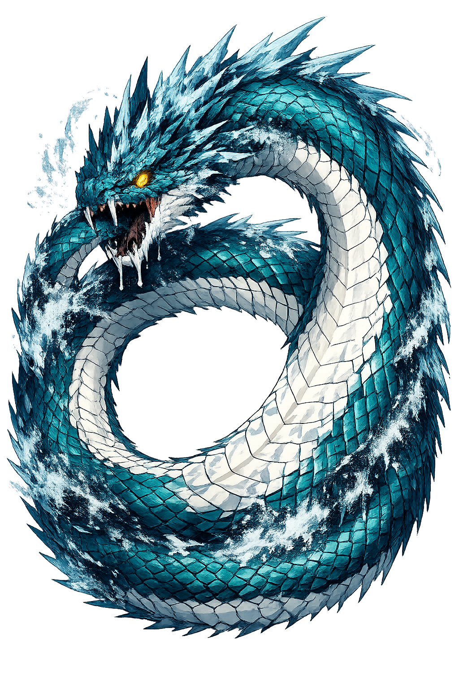

Jǫrmungandr through the eyes of sculptors, painters, and craftsmen across the ages

Thor Battering the Midgard Serpent label QS:Len," Thor fighting the mighty worm Jormundgandr at fishing trip with a giant" (Henry Fuseli, Public domain)

Jormungandr (Public domain)

Thor, Hymir and the Midgard Serpent — Thor, Hymir and the Midgard Serpent (Lorenz Frølich, Public domain)

Thor Fighting the Serpent by H. L. M — Captioned as "Thor Fighting the Serpent". Thor brandishes his hammer at Jörmungandr. (Signed "H. L. M.", Public domain)

The children of Loki by Willy Pogany — An illustration by Willy Pogany from a chapter from Children of Odin entitled "The children of Loki". No title otherwise given for the work. The three children of Loki in Norse mythology: the serpent Jörmungandr, the wolf Fenrir, and Hel. (Willy Pogany, Public domain)

The death of Thor and Jörmungandr by Frølich — Thor and Jörmungandr lie dead—having killed one another during the events of Ragnarök—as foretold in Völuspá . (Lorenz Frølich, Public domain)